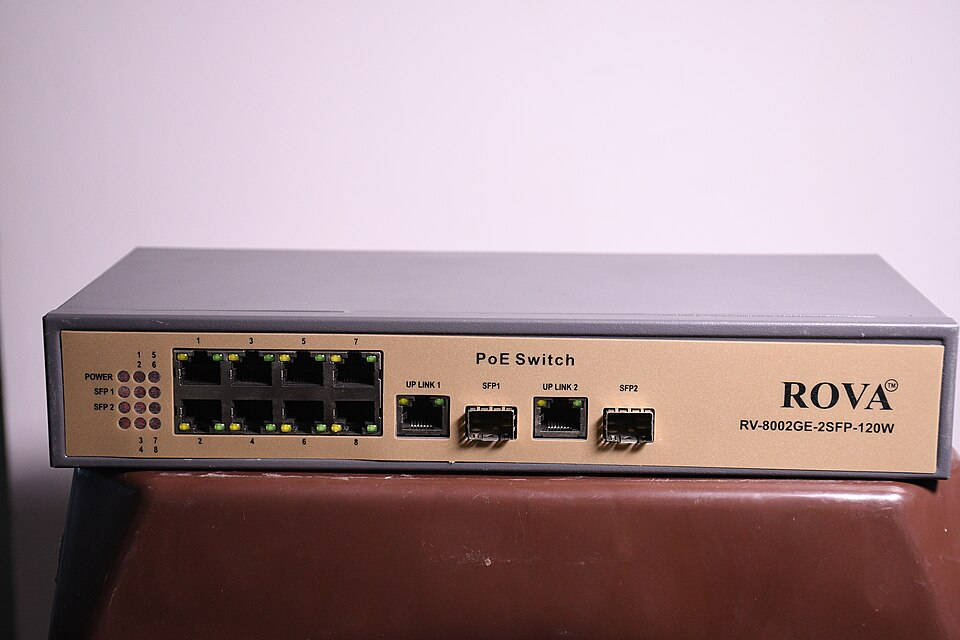

Kit esencial de red doméstica 2026: lo que sí vale la pena
La red es el cimiento invisible de todo home lab: da igual lo potente que sea tu servidor si el WiFi se cae en el dormitorio o el streaming se entrecorta cada noche. La buena noticia es que una red doméstica sólida no cuesta una fortuna; la mala, que el mercado está lleno de productos que prometen más de lo que aportan.

En esta guía separamos lo que sí vale la pena de lo que no: switch gestionable frente a no gestionable, qué categoría de cable comprar de verdad, y cuándo conviene un access point dedicado en lugar del router todo-en-uno de tu operadora. Cerramos con tres niveles de kit según tu presupuesto.
Switch gestionable vs. no gestionable
Un switch conecta tus equipos por cable. Los hay de dos tipos:
- No gestionable (unmanaged): lo enchufas y funciona. Sin configuración, sin complicaciones. Para conectar el servidor, la tele y un par de equipos más es todo lo que necesitas. Rango medio-bajo y cero mantenimiento.
- Gestionable (managed): permite crear VLANs (redes separadas), priorizar tráfico (QoS) y monitorizar puertos. Tiene sentido cuando quieres aislar los dispositivos IoT de tu red principal o segmentar el laboratorio del resto de la casa.
La recomendación honesta: si no sabes qué es una VLAN, no necesitas un switch gestionable todavía. Un switch no gestionable de 8 puertos gigabit cubre al 90 % de los hogares. Cuando tu laboratorio crezca y quieras segmentar, el gestionable será una compra con propósito, no un capricho. Según las especificaciones del fabricante, ambos tipos ofrecen el mismo rendimiento en velocidad pura; la diferencia está solo en las funciones de gestión.
Categorías de cable: Cat5e vs. Cat6/Cat6a, y cuándo importa
Aquí hay mucho mito que desmontar:
- Cat5e: soporta 1 Gbps hasta 100 metros y 10 Gbps en distancias cortas. Para cualquier casa normal con internet de hasta 1 Gbps, es suficiente y es lo más barato.
- Cat6: soporta 10 Gbps hasta 55 metros. Es la opción sensata si estás pasando cable nuevo por paredes o canaletas: cuesta poco más que el Cat5e y te deja la instalación preparada para la próxima década.
- Cat6a y superiores: 10 Gbps a 100 metros. Solo tiene sentido en instalaciones nuevas grandes o si ya tienes equipamiento multigigabit. Para el 95 % de los hogares es pagar de más.
La regla práctica: si compras cables sueltos para conectar equipos, Cat5e o Cat6 da igual en la práctica. Si vas a meter cable en la pared (obra que no querrás repetir), usa Cat6 directamente: la diferencia de precio es pequeña y el margen de futuro, grande. Y un aviso importante de la comunidad de usuarios: desconfía de los cables "Cat7/Cat8" baratísimos sin certificación; muchos no cumplen lo que prometen.
Access point dedicado vs. router todo-en-uno
El router que te da tu operadora hace de todo (router, switch, WiFi, a veces teléfono) y casi nada bien. Tienes dos caminos:
- Router potente + repetidor: funciona en pisos pequeños, pero los repetidores recortan el ancho de banda a la mitad y crean una segunda red con sus propios problemas. Es un parche, no una solución.
- Access point dedicado: un equipo cuya única misión es dar WiFi excelente, conectado por cable al router. Mejor cobertura, más dispositivos simultáneos y gestión separada. Si tu casa tiene zonas muertas, esta es la solución real.
El movimiento más rentable en la mayoría de los casos: mantén el router de la operadora solo como puerta a internet (o ponlo en modo puente) y añade un buen access point dedicado donde lo necesites, todo cableado. La comunidad de usuarios reporta que un solo access point bien ubicado y cableado supera a cualquier combinación de repetidores.
Los 3 niveles de kit
Nivel básico: lo esencial por poco dinero
Para pisos pequeños o para empezar: un switch no gestionable de 5–8 puertos gigabit y un par de cables Cat6 para conectar el servidor y la tele por cable. El WiFi sigue a cargo del router actual. Es la mejora con mejor retorno por dólar de toda esta guía.
Rango orientativo total: entre $30 y $60 (septiembre de 2026). Ver precio · Ver precio
Nivel equilibrado: la red que recomendamos a la mayoría
Switch no gestionable de 8 puertos, cableado Cat6 para los equipos fijos (servidor, tele, sobremesa) y un access point dedicado para un WiFi serio en toda la casa. Con esto eliminas las zonas muertas y dejas el tráfico pesado fuera del WiFi, que es donde debe estar.
Rango orientativo total: entre $120 y $220 (septiembre de 2026). Ver precio · Ver precio
Nivel avanzado: para casas grandes o laboratorios exigentes
Switch gestionable de 8–16 puertos con PoE (alimenta los access points por el propio cable de red), dos access points dedicados para cubrir plantas o extremos de la casa, y cableado Cat6 en pared hacia los puntos clave. Aquí ya puedes segmentar con VLANs: red principal, invitados e IoT por separado.
Rango orientativo total: entre $300 y $550 (septiembre de 2026). Ver precio · Ver precio
Antes de comprar
- Cablea primero, compra después. Antes de gastar en WiFi mesh o repetidores, pasa un cable Ethernet al punto problemático. Ningún equipo inalámbrico supera a un cable bien puesto, y el cable es lo más barato de esta guía.
- Cuenta tus puertos con margen. Entre el servidor, la tele, la consola y el access point, los puertos vuelan. Compra el switch con al menos 2–3 puertos libres para el futuro; la diferencia entre 5 y 8 puertos es mínima.
- PoE: solo si lo vas a usar. Un switch con PoE cuesta notablemente más. Solo compensa si vas a alimentar access points o cámaras por el cable de red; si no, es dinero parado.
- El WiFi mesh no es magia. Tiene su lugar en casas donde no se puede cablear, pero un sistema mesh bien hecho cuesta varias veces más que un access point cableado y rinde menos. Cablea siempre que puedas.
- Revisa la velocidad de tu conexión. Si tu internet es de 300 Mbps, no necesitas switches multigigabit ni Cat6a. Compra acorde a tu conexión real, no a la del anuncio.
Veredicto: qué kit elegir según tu caso
- Piso pequeño y presupuesto mínimo: nivel básico. Switch de 8 puertos + cables Cat6; el cambio se nota desde el primer día. Ver precio
- La mayoría de los hogares: nivel equilibrado. Es el punto donde la red deja de ser un problema y pasa a ser invisible, que es como debe ser. Ver precio
- Casa grande o laboratorio en crecimiento: nivel avanzado con PoE y VLANs. Compra con propósito cuando el laboratorio lo pida, no antes. Ver precio
Preguntas frecuentes
¿De verdad necesito cablear si el WiFi "me funciona"?
Para navegar y ver redes sociales, el WiFi basta. Para un servidor casero (Jellyfin, copias de seguridad, Nextcloud), el cable marca la diferencia: más velocidad sostenida, menos latencia y cero interferencias. Cablea al menos el servidor y la tele; el resto puede seguir por WiFi.
¿Un switch mejora la velocidad de internet?
No. El switch no puede darte más velocidad de la que contratas con tu operadora. Lo que sí mejora es la velocidad entre tus equipos dentro de casa y la estabilidad de las conexiones por cable frente al WiFi.
¿Cat6 o Cat6a para una instalación nueva en pared?
Cat6 es la recomendación general: soporta 10 Gbps en las distancias típicas de una casa y cuesta poco más que el Cat5e. Cat6a solo compensa si ya tienes (o planeas a corto plazo) equipamiento de 10 Gbps en toda la red.
¿Puedo mezclar el access point dedicado con el WiFi del router?
Puedes, pero lo ideal es usar el mismo nombre de red y contraseña en ambos, o mejor aún, desactivar el WiFi del router y dejar solo el del access point dedicado. Dos WiFis compitiendo en el mismo espacio generan más interferencias que beneficios.
Rangos de precio orientativos, verificados en septiembre de 2026. Los precios y la disponibilidad pueden cambiar.